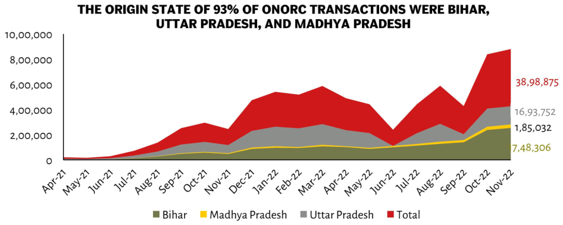

| Month | Bihar (Green) | Madhya Pradesh (Yellow) | Uttar Pradesh (Grey) | Total (Red Stacked Top) | | :--- | :--- | :--- | :--- | :--- | | Apr-21 | ~5,000 | 0 | 0 | < 5,000 | | May-21 | - | 0 | 0 | Low (< 10,000 approx.) | | Jun-21 | - | Small (~3k range?) | Very small/Negligible | Medium Growth (> 10,000 but below Red Peak)| | Jul-21 to Mar-22 Range: Fluctuating Trend<br>Total Volume Peaks in Feb-Mar at >4M and dips around Jan.<br><br>**Note:** Values for months between Nov '21 & Oct '22 are not explicitly labeled on the Y-axis scale provided; values listed here represent visual estimates based on relative height compared to explicit labels.** **Explicit Data Points from Legend Labels:** * **Bihar**: Ends exactly **7,48,306**. Starts near zero or negligible before April. * **Madhya Pradesh**: ends approximately halfway up its segment (**~9L**) starting low then rising steadily through Sep-'Oct'. * **Uttar Pradesh**: starts very high early ('High' bar), drops significantly by Dec', rises again mid year ending just above medium level of stack total volume end point(s). * **Total End Value**: Explicitly stated as **38,98,875**, which is roughly double that of UP alone suggesting significant contribution primarily comes from Punjab area.
